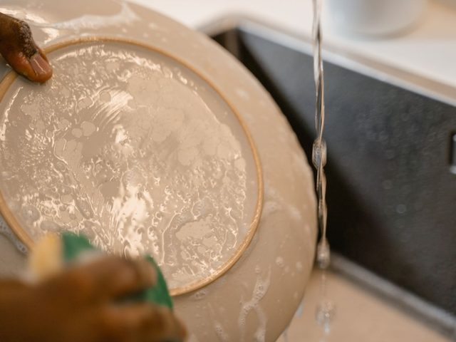

VOCABULARY · LALA WORD UNIT 10
What Is Life Like in Space?．一字多義（十）
dish 是盤子，也是「一道菜」；fire 是火，也是「開除」。這個單元有 7 個主題單字、7 個更多單字，再整理 meet／meat、snack／snake、then／than、hear／listen／sound、a few／a little／few／little，和字尾 -ous（famous、dangerous）。
共 16 個單字．點 🔊 聽發音

1dishn.
盤子；碗盤；一道菜
複數 dishes
- 1n.盤子；碗盤 do / wash the dishes 洗碗It's my turn to wash the dishes.輪到我洗碗了。
- 2n.一道菜 main dish 主菜；side dish 配菜Beef noodles is my favorite dish.牛肉麵是我最喜歡的菜。

2tastev. / n.
嚐起來；嚐；品嚐；味道；品味
taste - tasted - tasted - tasting
- 1v.嚐起來 taste + 形容詞；taste like + 名詞This soup tastes good.這個湯很好喝。
- 2v.嚐；品嚐Can I taste your ice cream?我可以嚐一口你的冰淇淋嗎？
- 3n.味道I don't like the taste of bitter melon.我不喜歡苦瓜的味道。
- 4n.品味She has good taste in music.她對音樂很有品味。
3stayv. / n.
保持（某狀態）；暫住；待在；停留；停留；住宿
stay - stayed - stayed - staying
- 1v.保持（某狀態） stay up 熬夜；stay away from 遠離Drink water and stay healthy.多喝水，保持健康。
- 2v.暫住 stay with + 人 暫住某人家We stayed at a hotel near the beach.我們住在海邊附近的飯店。
- 3v.待在；停留 stay home 待在家It's raining. Let's stay home.在下雨，我們待在家吧。
- 4n.停留；住宿Enjoy your stay in Taipei!祝你在臺北玩得愉快！

4raisev. / n.
提高（音量等）；舉起；養育；飼養；提出；募集（資金）；加薪
raise - raised - raised - raising
- 1v.提高（音量等）Please don't raise your voice.請不要提高音量。
- 2v.舉起 raise one's hand 舉手Raise your hand if you know the answer.知道答案的人請舉手。
- 3v.養育；飼養Grandma raised six children.奶奶養大了六個孩子。
- 4v.提出Amy raised a good question.Amy 提出了一個好問題。
- 5v.募集（資金） raise money 募款The students raised money for the poor.學生們為窮人募款。
- 6n.加薪Dad got a raise this year.爸爸今年加薪了。

5leveln.
含量；程度；等級；高度；（建築的）層
複數 levels
- 1n.含量This drink has a high level of sugar.這杯飲料含糖量很高。
- 2n.程度；等級This book is good for beginner level.這本書適合初級程度。
- 3n.高度 water level 水位；sea level 海平面The water level of the river is rising.河水的水位在上升。
- 4n.（建築的）層The food court is on level 4.美食街在四樓。

6specialadj. / n.
特別的；專門的；特殊用途的；特餐；特別節目
special - more special - most special
- 1adj.特別的 something special 特別的東西Today is a special day for me.今天對我來說是特別的一天。
- 2adj.專門的；特殊用途的Divers wear special suits.潛水員穿著特殊的潛水衣。
- 3n.特餐；特別節目Today's special is fried rice.今天的特餐是炒飯。

7smellv. / n.
聞起來；聞到；嗅覺；聞；氣味
smell - smelled（smelt） - smelled（smelt） - smelling
- 1v.聞起來 smell + 形容詞；smell of / like 有…的味道The flowers smell sweet.這些花聞起來很香。
- 2v.聞到I can smell something burning!我聞到有東西燒焦了！
- 3v.嗅覺；聞Dogs can smell very well.狗的嗅覺很好。
- 4n.氣味I love the smell of fresh bread.我喜歡剛出爐麵包的香味。

8biten. / v.
一口；咬；叮；（魚）上鉤
bite - bit - bitten - biting
- 1n.一口 have / take a bite 咬一口Can I have a bite of your sandwich?我可以吃一口你的三明治嗎？
- 2v.咬；叮The mosquitoes bit me all night.蚊子咬了我一整晚。
- 3v.（魚）上鉤The fish aren't biting today.今天魚都不上鉤。

9firen. / v.
火；火災；火堆；開槍；解僱
fire - fired - fired - firing
- 1n.火；火災 set fire to 放火；put out the fire 滅火；on fire 著火The firefighters put out the fire.消防員撲滅了火。
- 2n.火堆We sat around the fire and sang songs.我們圍著火堆唱歌。
- 3v.開槍The soldier fired into the air.士兵朝空中開槍。
- 4v.解僱 be / get fired 被開除He was fired for being late every day.他因為每天遲到被開除。

10gasn.
氣體；瓦斯；天然氣；腸胃脹氣；汽油
複數 gases（gasses）
- 1n.氣體Water can turn into a gas.水可以變成氣體。
- 2n.瓦斯；天然氣 gas stove 瓦斯爐Turn off the gas after cooking.煮完飯要關瓦斯。
- 3n.腸胃脹氣Eating beans gives me gas.吃豆子讓我脹氣。
- 4n.汽油 gas station 加油站The car is out of gas.車子沒油了。

11getv.
得到；買；收到；上下車；到達；變得；了解
get - got - got（gotten） - getting
- 1v.得到；買Where did you get that cool bag?你那個酷包包在哪裡買的？
- 2v.收到 get a call 接到電話I got a letter from my pen pal.我收到筆友寄來的信。
- 3v.上下車 get on / off 上／下（公車、火車）；get in / out of 上／下（汽車）Get on the bus at the next stop.在下一站上公車。
- 4v.到達 get to + 地方 到達What time did you get home?你幾點到家的？
- 5v.變得 get married 結婚；get used to 習慣It's getting dark.天色漸漸暗了。
- 6v.了解Sorry, I don't get it.抱歉，我不懂。

12mediumadj. / n.
中等的（尺寸）；（牛排）五分熟的；媒介
複數 media（mediums）
- 1adj.中等的（尺寸）I'd like a medium coffee, please.我要一杯中杯咖啡。
- 2adj.（牛排）五分熟的I'd like my steak medium.我的牛排要五分熟。
- 3n.媒介TV is a popular medium.電視是很普遍的媒體。
13rockn. / v.
岩石；石塊；搖滾樂；搖晃
rock - rocked - rocked - rocking
- 1n.岩石；石塊We sat on a big rock by the sea.我們坐在海邊的大石頭上。
- 2n.搖滾樂 rock music 搖滾樂；rock star 搖滾明星My dad loves rock music.我爸爸很愛搖滾樂。
- 3v.搖晃The boat rocked in the big waves.小船在大浪中搖晃。

14soundn. / v. / adj.
聲音；音量；聽起來；完好無傷的；（睡得）很沉的
sound - sounded - sounded - sounding
- 1n.聲音 make a sound 發出聲音I heard a strange sound outside.我聽到外面有奇怪的聲音。
- 2n.音量Can you turn the sound down?你可以把音量調小嗎？
- 3v.聽起來 sound + 形容詞；sound like + 名詞That sounds like fun!聽起來很好玩！
- 4adj.完好無傷的 safe and sound 安然無恙They came back safe and sound.他們平安歸來。
- 5adj.（睡得）很沉的The baby is in a sound sleep.寶寶睡得很熟。

15famousadj.
有名的
fame 名聲 + -ous
- 1adj.有名的 be famous for 因…而有名Tainan is famous for its food.臺南以美食聞名。
16dangerousadj.
危險的
danger 危險 + -ous
- 1adj.危險的It's dangerous to swim here.在這裡游泳很危險。
FOCUS
發音或拼字很像的字
| 單字 | 意思 | 例句 |
|---|---|---|
| meet / meat | 遇見 ／ 肉（兩個字發音一樣） | Nice to meet you.／I don't eat meat. |
| snack / snake | 點心 ／ 蛇 | We had some snacks.／There's a snake! |
| then / than | 當時；然後；那麼 ／ 比（比較級） | Then we went home.／He is taller than me. |
FOCUS
易混淆字：hear／listen／sound
| 單字 | 用法 | 例句 |
|---|---|---|
| hear | 聽到（不用刻意去聽） | I heard a dog bark. |
| listen | 專心聽，後面要加 to | Listen to me, please. |
| sound | 聽起來 + 形容詞；sound like + 名詞（沒有進行式） | That sounds great! |
FOCUS
易混淆字：a few／a little／few／little
| 單字 | 用法 | 例句 |
|---|---|---|
| a few | 一些（還有），接可數複數名詞 | I have a few friends here. |
| a little | 一些（還有），接不可數名詞 | There is a little milk left. |
| few | 很少、幾乎沒有，接可數複數名詞 | Few people came to the party. |
| little | 很少、幾乎沒有，接不可數名詞 | There is little water in the bottle. |
有 a 的偏正面（還有一些），沒有 a 的偏負面（幾乎沒有）。
FOCUS
字尾 -ous：「充滿…的；有…性質的」
| 原來的字 | 加 -ous | 意思 |
|---|---|---|
| fame 名聲 | famous | 有名的 |
| danger 危險 | dangerous | 危險的 |